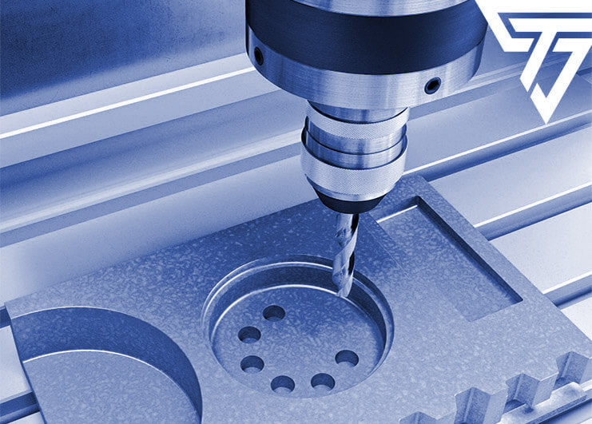

Dostarczamy rozwiązania technologiczne dla przemysłu lotniczego.
Zajmujemy się głównie obróbką materiałów trudno-obrabialnych procesami specjalnymi i metodami niekonwencjonalnymi jak również wytwarzaniem CNC.
O firmie

Spółka Salloytech Sp. z o.o. powstała w 2014 roku i funkcjonuje w branży lotniczej.
Zajmuje się obróbką materiałów głównie trudno-obrabialnych takich jak nadstopy niklu oraz tytan w szczególności metodami niekonwencjonalnymi i procesami specjalnymi.
Produkcją części o restrykcyjnych wymaganiach zapewnienia jakości. Badaniem powłok natryskiwanych termicznie.
Posiadamy system zarządzania jakością zgodny z AS9100:2016 oraz ISO9001:2015. Nasza kadra posiada wieloletnie doświadczenie w produkcji części bezpośrednich w procesach specjalnych.
Nasze główne atuty:
Jakość
Zapewniamy System Zarządzania Jakością zgodny z ISO 9001:2015 oraz AS 9100D:2016 oraz wykwalifikowaną kadrę audytorów wewnętrznych.

Technologia
Stosujemy nowoczesne metody obróbkowe, ubytkowe oraz addytywne aby zapewnić optymalny stosunek ceny do jakości przy równoczesnym spełnieniu wszystkich wymagań.

Terminowosć
Gwarantujemy szybki czas działania od fazy projektu do dostawy materiału dzięki metodzie Just-in-Time.
Oferta
Oferujemy usługi wytwarzania metodami ubytkowymi oraz addytywnymi. Posiadamy bogate zaplecze maszynowe, wykwalifikowaną kadrę oraz doświadczenie w produkcji procesami specjalnymi. Korzystamy również z obróbek konwencjonalnych oraz CNC. Zachęcamy do składania zapytań ofertowych.
Zachęcamy do zapytań ofertowych.Galeria
Wykonane przez nas produkty.